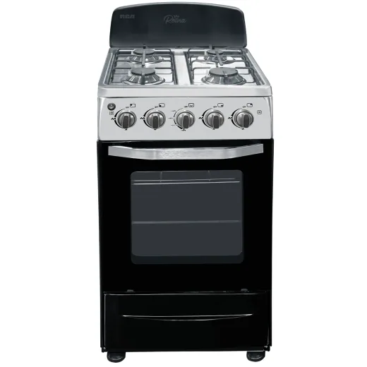
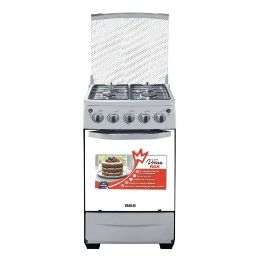
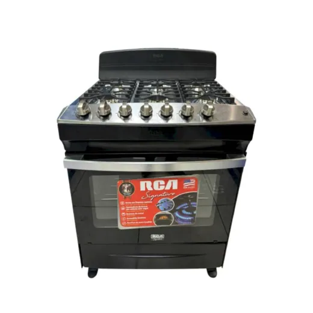
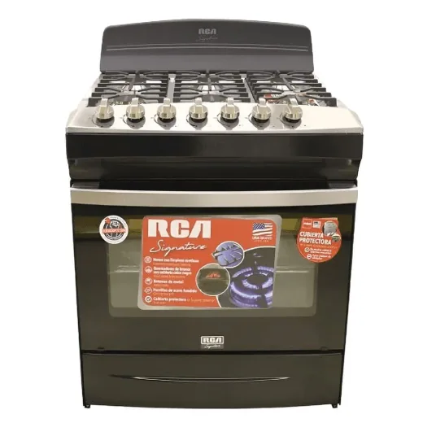

RCA · Modelo RCCR26
Estufa de Gas RCA 30 Pulgadas 4 Quemadores RCCR26
L 3,995
En Gallo más Gallo
Precio en cada tienda
| Tienda | Precio | Antes | Disponibilidad | |
|---|---|---|---|---|
| Gallo más Gallo | L 3,995 | — | Disponible | Ver en tienda › |
Precios referenciales tomados de cada tienda el 28 de noviembre de 2026. El precio válido es el que muestra la tienda al comprar.
Historial de precio
Lo seguimos desde el 3 de noviembre. Precio más bajo registrado: L 3,995 en Gallo más Gallo (20 de noviembre), igual que hoy. Cambios de precio registrados: 1.
Características
| Color | Negro |
|---|---|
| Quemadores | 4 |
| Tipo | De gas |
Descripción
Estufa de Gas RCA 20 Pulgadas 4 Quemadores RCCR26 – funcionalidad y estilo para cocinar todos los días La Estufa de Gas RCA RCCR26 es la combinación ideal entre practicidad, rendimiento y diseño moderno. Gracias a su tamaño compacto de 20 pulgadas, es perfecta para hogares hondureños que buscan aprovechar mejor el espacio sin renunciar a la comodidad de cocinar sus recetas favoritas. Desde el desayuno hasta la cena, esta estufa está lista para acompañarte en cada preparación. Cuatro quemadores para cocinar con mayor eficiencia Sus 4 quemadores de hierro fundido ofrecen una distribución uniforme del calor y la resistencia necesaria para el uso diario. Prepará varios platillos al mismo tiempo con mayor comodidad y aprovechá mejor tu tiempo en la cocina. Encendido eléctrico que simplifica tu rutina Los quemadores cuentan con encendido eléctrico, permitiéndote iniciar la cocción de forma rá
Otros estufas RCA
 Estufa de Gas RCA 20 Pulgadas RCCR26L 3,999En Elektra
Estufa de Gas RCA 20 Pulgadas RCCR26L 3,999En Elektra Estufa a Gas RCA 20" 4 Quemadores Color Negra RCCR26L 4,399En Lady Lee
Estufa a Gas RCA 20" 4 Quemadores Color Negra RCCR26L 4,399En Lady Lee Estufa de Gas RCA 20 Pulgadas 4 Quemadores RCCR28L 4,595En Gallo más Gallo
Estufa de Gas RCA 20 Pulgadas 4 Quemadores RCCR28L 4,595En Gallo más Gallo
Estufa de Gas RCA 20 Pulgadas RCCR28L 4,749En Elektra Estufa a Gas 20" 4 Quemadores Negra RCA RCCR27L 4,799En Lady Lee
Estufa a Gas 20" 4 Quemadores Negra RCA RCCR27L 4,799En Lady Lee Estufa de gas RCA RCCR22CV 4 quemadoresL 5,245En Walmart
Estufa de gas RCA RCCR22CV 4 quemadoresL 5,245En Walmart
Estufa de Gas RCA 30 Pulgadas RCCR708CL 7,799En Elektra
Estufa de gas RCA RCCR3002 4 quemadores · RCCR3002VL 7,995En 2 tiendas · más barato en Gallo más Gallo